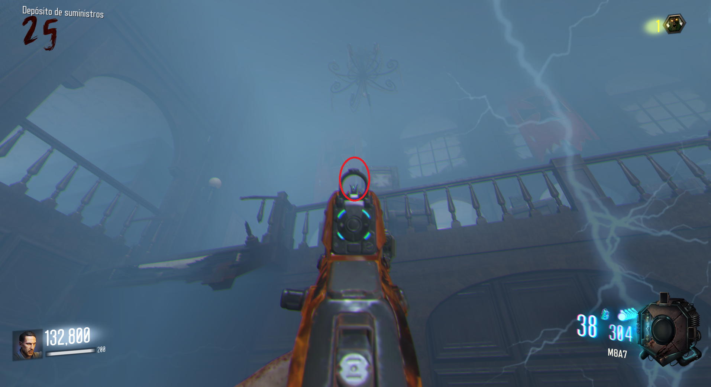

Monos: Buscaremos los monos en la caja como primer paso.
Después iremos a la plaza fuera de Dragon Command y esperaremos a que el dragón escupa fuego en la zona.
Inmediatamente tiraremos un mono dentro del fuego (es importante hacerlo rápido, ya que el mono debe explotar antes de que desaparezca el fuego).
Debemos repetir esto en Tank Factory y luego en Supply Depot.
Muñecas: Iremos al Spawn e interactuamos con la muñeca de la tumba de Samantha.
En este momento una muñeca aparecerá por el mapa de manera aleatoria y tendremos que encontrarla y dispararle.
Nos podemos guiar por la música que suena desde ella.
Alguna localizaciones: Dentro de Dragon Command, en el techo. En Supply Depot, encima de una caja.
 Bajo la escalera más baja de Department Store. En la ventana de la izquierda de la lanzadera de dragón en Supply Depot. En el vagón que va de Supply Depot a Armory. En el Spawn. En las afueras de Tank Factory, en el techo de una cloaca. Debajo de Infarmary. En la plaza de Dragon Command.
Si fallamos se escuchará la risa de Samantha. Solo tendremos que volver a la tumba y repetir el proceso. Final: Volvemos al Spawn e interactuamos con la muñeca de la tumba de Samantha. Nos dará un Munición Máxima y empezará a sonar la canción.